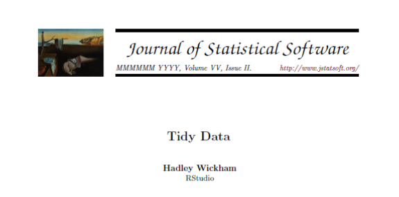
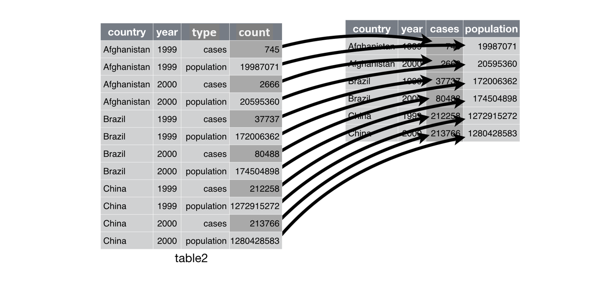

From Messy Data To Tidy Data
“Happy families are all alike; every unhappy family is unhappy in its own way.” –– Leo Tolstoy
“Tidy datasets are all alike, but every messy dataset is messy in its own way.” –– Hadley Wickham
What is ‘tidy data’?
Link: http://www.jstatsoft.org/v59/i10/paper
Same data can be stored in multiple ways
# wide representation
table1# A tibble: 6 × 4
country year cases population
<chr> <int> <int> <int>
1 Afghanistan 1999 745 19987071
2 Afghanistan 2000 2666 20595360
3 Brazil 1999 37737 172006362
4 Brazil 2000 80488 174504898
5 China 1999 212258 1272915272
6 China 2000 213766 1280428583# long representation
table2# A tibble: 12 × 4
country year type count
<chr> <int> <chr> <int>
1 Afghanistan 1999 cases 745
2 Afghanistan 1999 population 19987071
3 Afghanistan 2000 cases 2666
4 Afghanistan 2000 population 20595360
5 Brazil 1999 cases 37737
6 Brazil 1999 population 172006362
7 Brazil 2000 cases 80488
8 Brazil 2000 population 174504898
9 China 1999 cases 212258
10 China 1999 population 1272915272
11 China 2000 cases 213766
12 China 2000 population 1280428583Same data can be stored in multiple ways
table1# A tibble: 6 × 4
country year cases population
<chr> <int> <int> <int>
1 Afghanistan 1999 745 19987071
2 Afghanistan 2000 2666 20595360
3 Brazil 1999 37737 172006362
4 Brazil 2000 80488 174504898
5 China 1999 212258 1272915272
6 China 2000 213766 1280428583table3# A tibble: 6 × 3
country year rate
* <chr> <int> <chr>
1 Afghanistan 1999 745/19987071
2 Afghanistan 2000 2666/20595360
3 Brazil 1999 37737/172006362
4 Brazil 2000 80488/174504898
5 China 1999 212258/1272915272
6 China 2000 213766/1280428583Can also be spread over multiple tables
# cases
table4a# A tibble: 3 × 3
country `1999` `2000`
* <chr> <int> <int>
1 Afghanistan 745 2666
2 Brazil 37737 80488
3 China 212258 213766# population
table4b# A tibble: 3 × 3
country `1999` `2000`
* <chr> <int> <int>
1 Afghanistan 19987071 20595360
2 Brazil 172006362 174504898
3 China 1272915272 1280428583Not all of these representations are easy to work with.
Rules for a tidy dataset
A tidy dataset follows 3 Rules:
- Each variable must have its own column
- Each observation must have its own row
- Each value must have its own cell

Why ensure that your data is tidy?
Consistent data structure makes it easier to apply tools that work with it
Most R-functions work vectorised.
Works neatly with all types of tidyverse packages
Exercise
check out the Exercise Part 1
So why is not all data always tidy?
Most data is not tidy.
Most of the time we will need to tidy up before analysis
The tidyverse comes for rescue. It provides a bunch of really helpful tools for efficient cleaning transformation of messy datasets. These are provided by a package called
tidyr.
The Tidyr package

Two major functions to transform tables
pivot_wider(): make long tables wide
pivot_longer(): make wide tables long
pivot_wider()
make a long table wide
Make sure to have tidyr 1.0 or above. In previous versions this functionality was covered by the function spread().
table2 %>%
pivot_wider(names_from = type,
values_from = count)
We need to specify:
names_from: which column contains the new column names?values_from: which column contains the values?Additional options:
?pivot_widervignette("pivot")
pivot_longer
Makes a wide table long.
This function does the reverse operation of pivot_wider(). It makes a wide table long.
In previous versions of tidyris was called gather().
table4a %>%
pivot_longer(cols = c('1999', '2000'),
names_to = "year",
values_to = "cases")
We need to specify:
cols: choose columns to be transformednames_to: column-name for the key, in quotesvalues_to: column-name for the values, in quotesAdditional options:
?pivot_longervignette("pivot")
Selection of columns in cols argument can be forward or backward
# forward: define which columns to use
table4a %>%
pivot_longer(cols = c('1999', '2000'),
names_to = "year",
values_to = "cases")
# backward: define which columns NOT to use
table4a %>%
pivot_longer(cols = c(-country),
names_to = "year",
values_to = "cases")Splitting columns: separate()
Problem: column table3$rate contains multiple values in one cell.
table3# A tibble: 6 × 3
country year rate
* <chr> <int> <chr>
1 Afghanistan 1999 745/19987071
2 Afghanistan 2000 2666/20595360
3 Brazil 1999 37737/172006362
4 Brazil 2000 80488/174504898
5 China 1999 212258/1272915272
6 China 2000 213766/1280428583We can solve this using the function separate().
table3 %>%
separate(rate, into = c("cases", "population"))
Where does it separate?
By default: Whereever it sees as non-alphanumeric character.
We can also specify it
# separate at "/"
table3 %>%
separate(rate, into = c("cases", "population"), sep = "/")
# separate at defined position
table3 %>%
separate(year, into = c("century", "year"), sep = 2)Look careful at column types of output. New columns are stored as ‘character’. That doesn’t allow us to do calculations.
table3 %>%
separate(rate, into = c("cases", "population"))# A tibble: 6 × 4
country year cases population
<chr> <int> <chr> <chr>
1 Afghanistan 1999 745 19987071
2 Afghanistan 2000 2666 20595360
3 Brazil 1999 37737 172006362
4 Brazil 2000 80488 174504898
5 China 1999 212258 1272915272
6 China 2000 213766 1280428583Solution:
convert = TRUE tries to change the column-types to better types
table3 %>%
separate(rate, into = c("cases", "population"), convert = TRUE) # A tibble: 6 × 4
country year cases population
<chr> <int> <int> <int>
1 Afghanistan 1999 745 19987071
2 Afghanistan 2000 2666 20595360
3 Brazil 1999 37737 172006362
4 Brazil 2000 80488 174504898
5 China 1999 212258 1272915272
6 China 2000 213766 1280428583Unite columns: unite()
The inverse operation of separate()
table5 %>%
unite(new, century, year)
Missing values
Missing values can be either explicit or implicit.
An explicit missing value is the presence of an absence.
An implicit missing value is the absence of a presence.
stocks <- tibble(
year = c(2015, 2015, 2015, 2015, 2016, 2016, 2016),
quarter = c( 1, 2, 3, 4, 2, 3, 4),
return = c(1.88, 0.59, 0.35, NA, 0.92, 0.17, 2.66)
)
stocks# A tibble: 7 × 3
year quarter return
<dbl> <dbl> <dbl>
1 2015 1 1.88
2 2015 2 0.59
3 2015 3 0.35
4 2015 4 NA
5 2016 2 0.92
6 2016 3 0.17
7 2016 4 2.66We can make implicit NA’s explicit.
# take set of columns and finds all uniqe combinations, fill with NA in case combination is missing
stocks %>%
complete(year, quarter)# A tibble: 8 × 3
year quarter return
<dbl> <dbl> <dbl>
1 2015 1 1.88
2 2015 2 0.59
3 2015 3 0.35
4 2015 4 NA
5 2016 1 NA
6 2016 2 0.92
7 2016 3 0.17
8 2016 4 2.66Or we can make explicit NA’s implicit.
stocks %>%
pivot_wider(names_from=year,
values_from = return) %>%
pivot_longer(cols = - quarter,
names_to = "year",
values_to = "return")# A tibble: 8 × 3
quarter year return
<dbl> <chr> <dbl>
1 1 2015 1.88
2 1 2016 NA
3 2 2015 0.59
4 2 2016 0.92
5 3 2015 0.35
6 3 2016 0.17
7 4 2015 NA
8 4 2016 2.66stocks %>%
pivot_wider(names_from=year,
values_from = return) %>%
pivot_longer(cols = - quarter,
names_to = "year",
values_to = "return",
values_drop_na = TRUE)# A tibble: 6 × 3
quarter year return
<dbl> <chr> <dbl>
1 1 2015 1.88
2 2 2015 0.59
3 2 2016 0.92
4 3 2015 0.35
5 3 2016 0.17
6 4 2016 2.66Missing values: fill()
Quite often columns are incomplete. fill()allows to fill a column.
Example:
# original file
treatment# A tibble: 4 × 3
person treatment response
<chr> <dbl> <dbl>
1 Derrick Whitmore 1 7
2 <NA> 2 10
3 <NA> 3 9
4 Katherine Burke 1 4treatment %>%
fill(person)# A tibble: 4 × 3
person treatment response
<chr> <dbl> <dbl>
1 Derrick Whitmore 1 7
2 Derrick Whitmore 2 10
3 Derrick Whitmore 3 9
4 Katherine Burke 1 4Summary: TidyR
A tidy dataset follows three rules:
- Each variable must have its own column
- Each observation must have its own row
- Each value must have its own cell

The functions pivot_longer, pivot_widerand separate allow us to tidy up messy tables.